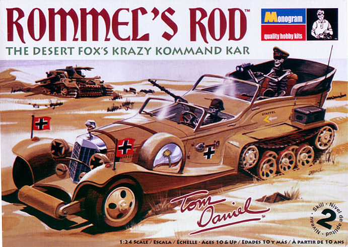
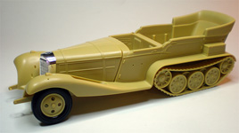
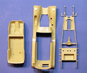
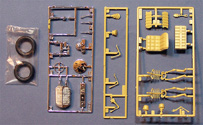
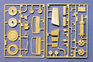
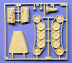
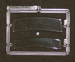
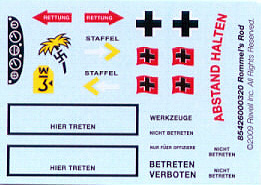

{kind=link}
{kind=link}
{kind=link}
{kind=link}
{kind=link}
{kind=link}


Monogram 1/24 Tom Daniel's “Rommel's Rod”

Kit #4260 MSRP $22.95 $18.36 from Mega Hobby
Images and text Copyright © 2009 by Matt Swan
The story as told around the campfire deep in the heart of the desert goes something like this: The war in Africa was not going well for the Allies so the British SAS put together a mission to raid not only Erwin Rommel’s headquarters but to also hit key fuel dumps in the area. While a poorly planned mission which for the most part failed the SAS did make off with Generalfeldmarschall Rommel's desert ride, a heavily modified Hanomag half-track frame with a Mercedes limousine body. Later as Rommel traveled back to German his replacement staff car was strafed by RAF Spitfires resulting in serious injury to the Generalfeldmarschall. The half-track which was now being called Rommel’s Rod was acquired by Field Marshall Bernard Montgomery in North Africa for a short period of time before mysteriously disappearing. Allegations were made against General George Patton and rumors floated around that the car had been dumped off of Gibraltar but divers never located the car in the area where it was supposedly dumped. After Rommel had committed suicide his tormented soul returned to Tunisia, reacquired his treasured staff car and a driver and now prowls the sandy horizon seeking revenge on those who stole his hot rod half-track. If you listen carefully during the still desert nights you may hear the distant growl of his Mercedes engine as he cruises the dunes.
The truth lies nowhere near any of that. Rommel’s staff car was just a staff car – nothing unusual, the SAS mission was a total bust with only two members surviving. They did manage to raid Rommel’s headquarters but he was not even there. The truth is rarely as much fun as the campfire story. Monogram’s “Rommel’s Rod” comes from the mind of Tom Daniel, a character famous for creating not only an extensive line of automotive art but a long list of caricature kits for Monogram. This kit was originally designed and produced in the late 1960’s and early 1970’s and was a follow on to the very successful Red Baron kit. When Tom Daniel was doing this Monogram already had a Mercedes SSK kit in stock and this tooling was simply added to that kit. This helps to explain the supercharged Mercedes straight eight under the hood and the Mercedes front end.
By 1980 the kit had disappeared and collectors were paying upwards of $300 to possess a mint condition model. Unlike most Monogram kits this one never showed back up in the production rotation and rumors that the molds had been shipping to Japan then had sunk in a storm (sound familiar?) or had been destroyed or severely damaged from improper care were kicking around. Which if any of these were true I cannot say however in 2008 Monogram began to either rework what they had or just designed all new molds. In 2009 a new tooled Rommel’s Rod hit model store shelves and the collecting frenzy began.
The Kit
While we are all plenty happy to have this kit available to us once again you may ask exactly what does the new or re-tooling encompass? Many things remain the same as the original kit release such as the skeletal figures are the same and the main track gear looks similar however the front suspension has been upgraded a bit and the body shell and interior tub have been cleaned up. The body shell sports a new 2009 copyright logo underneath along with some nice clean surface detail and barely visible mold separation seams. The kit includes a nice straight eight Mercedes engine that can be viewed via the removable hood. The engine is good straight from the box but a little extra detail work would make it really pop. The main tracks are complete molded assemblies which are fine for the standard builder however the more annul armor builder may want to explore some slightly more unconventional additions – I’ll talk about that in a few moments.
Back to the basic kit, we also get a medium sprue of chrome plated parts which may be fine for a novelty display but just don’t work for anything aimed at being a little more realistic. The AMS modeler will probably want to strip the chrome and apply a more desert orientated paint to these parts. Two clear panels are provided for the driver’s and passenger’s windscreens and some basic machine guns are included as well. We get two vinyl tires and of course the skeletons. I find the skeletons lacking especially in the ribcage area. They only include the ribs along the spine and totally lack the breast bone and forward ribs. Inventory details add up to Sixty seven injection molded tan and chrome parts with two clear parts and two tires for a total of seventy one parts in the box – exactly the same as the original kit!





You may click on the small images above to view larger pictures
Decals and Instructions
The kit instructions are a flashback to the old 1960s format where we have an A-3 sized sheet folded twice to form eight panels with the text orientated in a couple different directions. The two cover panels contain quite a bit of text covering the model and even makes mention of the mystery surrounding the original molds. Does not give any answer to this mystery, just mentions it. Following this are five exploded assembly views that include an extensive set of assembly instructions that are more aimed at the entry level modeler. The final panel contains a painting guide with colors that is again aimed at the entry level modeler and has some very brief decal placement instructions.

The kit contains a small sheet of somewhat fanciful decals. These display good color density and print registry and should respond well to most setting solutions as most Monogram decals do. Something the more advanced armor modeler might want to see that is lacking is a set of swastikas.
Conclusions
This is a fun kit and I doubt that I am the only one happy to see it back on the shelves after so many years. Not only is this a fun kit for the advanced modeler but maybe even more important, it can act as a gateway model for new blood to the hobby. This is the kind of kit that draws children into the hobby and we all benefit from an expanded market so when you go out to buy one for yourself make sure you pick one up as a gift for that newbie.
Now most of you who have come to read this review are not new to the hobby, in fact you most likely suffer from AMS (Advanced Modeler Syndrome) as I do so let’s talk about a few things that could be done to improve this model and take the whole thing to the next level. As already mentioned a little work in the engine compartment will pay good dividends such as the addition of scratched ignition wires verses the molded in place wires, radiator hoses and maybe a battery. The main tracks need some serious work. Actually I think I would just throw these things into the spares box and go for a total replacement. This is going to take a little more work and a few of your hard earned modeling dollars. One option would be any of the wheels and tracks from the Tamiya 1/35 Sd. Kfz. 7/1 kits which are currently available at the time of this writing. From here you can step up to some hard core scratch building and add some interior detail to the passenger compartment doors then maybe add some ammo cans or assorted hand trenching tools to the exterior. If you are going to use the skeleton figures, and really – how can you not, a new rib cage needs to be constructed for each figure. I think this is probably going to be the most challenging upgrade. Too bad there were not some convenient aftermarket 1/24 German skeletal figures readily available – maybe too much to ask for?